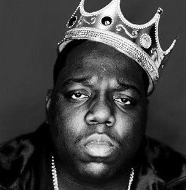

Born as Christopher Wallace on May 21, 1972, in Brooklyn, New York, Biggie Smalls, also known as Notorious B.I.G., took the rap game by storm in 1994 with his debut album, Ready to Die.
The Notorious B.I.G. released his debut album, Ready to Die, which told the story of his life, from drug dealer to rapper. Backed with hits like Juicy and Big Poppa, the record went platinum and the young hip-hop artist became a full-fledged star. That same year, The Source named the rapper Best New Artist, Best Live Performer and Lyricist of the Year.
As his star power increased, Biggie did his best to share his prestige. He backed the work of several rappers that he'd originally performed with while starting out in Brooklyn, and took to the studio in support of other artists on Sean "Puffy" Combs's label. He also teamed up with such stars as Michael Jackson and R. Kelly. By the close of 1995, Biggie was one of music's best-selling and most sought after performers.
Source: The Notorious B.I.G. Biography